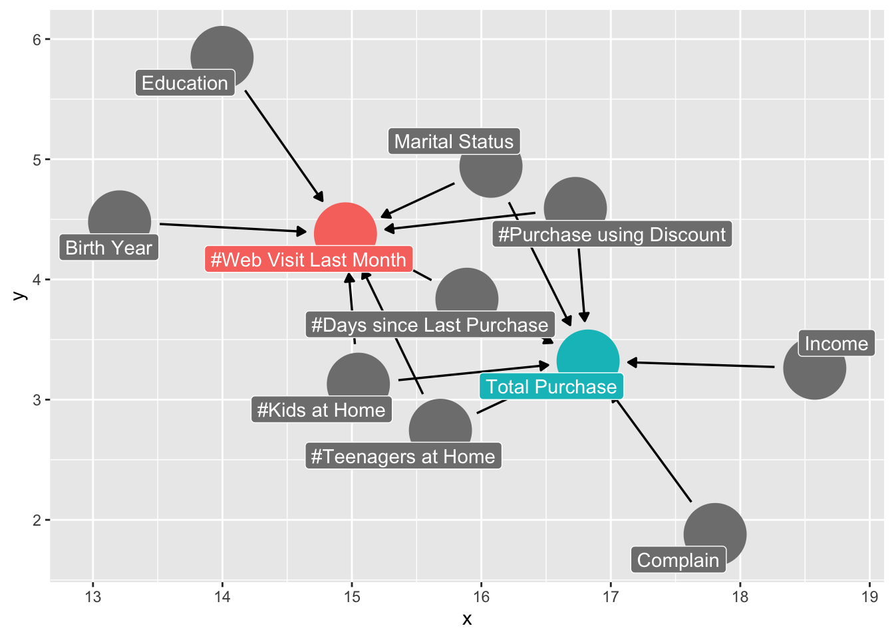
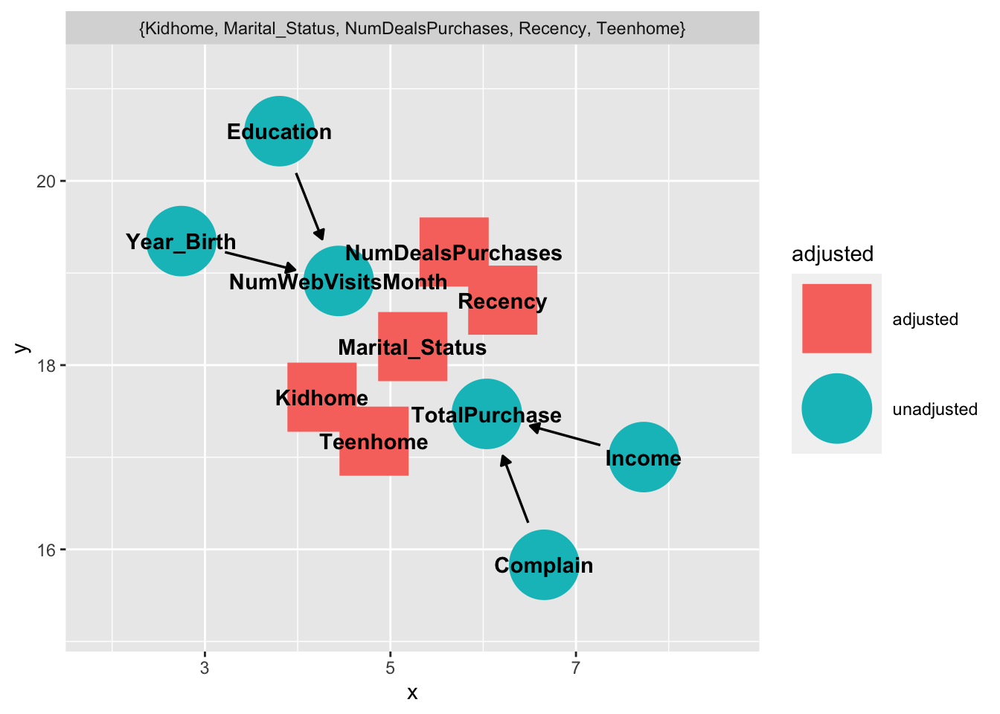

With online shopping becoming one of the most important parts of today’s shopping patterns, we are interested in analyzing the impact of online stores on shopping pattern in general. I wish to take an angle to understand this topic by proposing a causal question: Do people who made more web visit purchase more compared with people who made less web visit?
The dataset of this project is available on Kaggle (for source link and variable details, please see appendix in Code section). The dataset is called Customer Personality Analysis contains a detailed analysis of 2240 customers. It helps the business to better understand its customers and makes it easier for them to modify products according to the specific needs, behaviors and concerns of different types of customers.
For this project, I am interested in factors “Year_Birth”, “Education”, “Marital_Status”, “Income”, “Kidhome”, “Teenhome”, “Recency”, “Complain”, “NumDealsPurchases”, “TotalPurchase”, “NumWebVisitsMonth”, so I ended up with 2240 observations and 11 variables.

Based on the factors I am interested in, I draft with a potential causal diagram as the backbone of my analysis. I assume that our exposure number of purchases made through the company’s website is dependent on the year the consumer was born (older people may have trouble accessing technologies), highest educational degree received, marital status, number of kids at home, number of teenagers at home, number of days since customer’s last purchase, and number of purchases made with a discount.
The outcome number of purchases in total is dependent on marital status, number of kids at home, number of teenagers at home, number of days since customer’s last purchase, number of purchases made with a discount, income level, as well as if the costumer ever complained about the service of indoor shopping.
With this potential relationships exist between variables, I find that number of days since customer’s last purchase, number of purchases made with a discount, marital status, number of kids at home, and number of teenagers at home are potential confounders that will impact on both exposure and outcome (see the adjusted DAG). We are going to deal with the confounder problem in the Analysis Section.